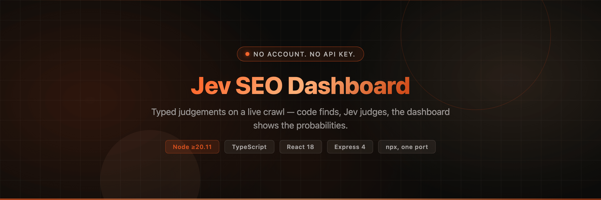

Typed judgements on a live crawl.
Audits any business website for SEO and AI-search visibility. A deterministic crawl feeds narrow typed questions to the Jev decision model, and the dashboard renders the probabilities as they land — not after the report.

$ npx @vakandi/jev-seo
No account. No API key. No clone. Dashboard and API on one port — 8787.